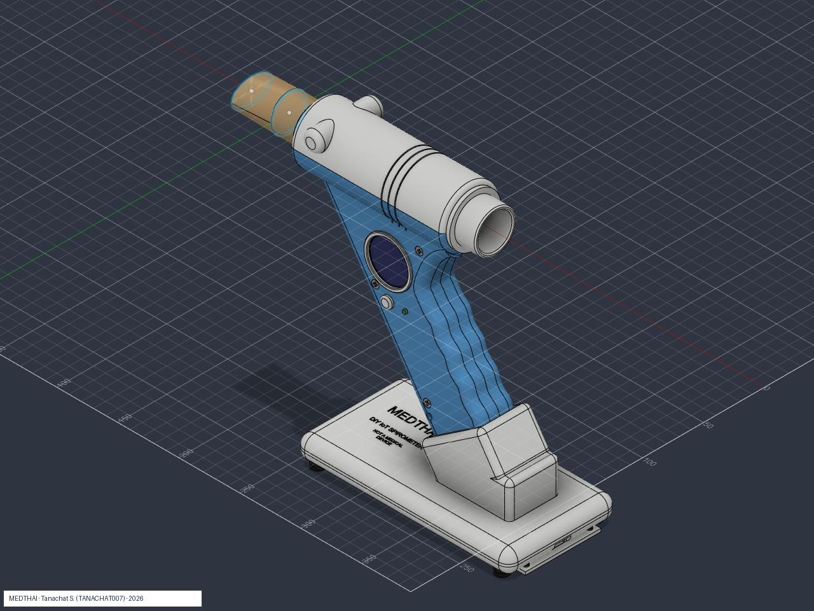
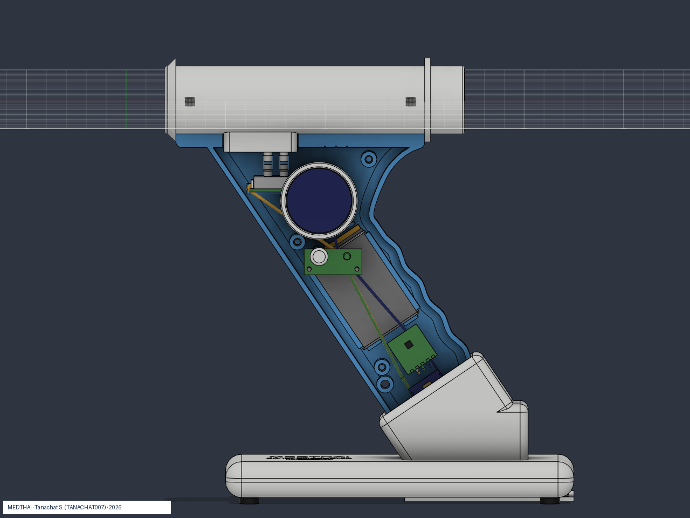

1 · Problem
Smoke from burning rice straw and cane leaves carries PM2.5 deep into the lung, linked to cough, asthma and COPD.
- COPD: ~3.4 million deaths in 2023, ~6% of all deaths (WHO)
- Pathumthani survey (n=1,014): COPD 8.3%, but only 9.5% of them had been diagnosed
- Open burning of crop residue: ~524 billion baht/year damage in Thailand
Spirometry is the confirming test, but it stays where the machine and budget are.
2 · Our idea
A handheld spirometer a school or village health post can build, with results sent to a doctor by phone.
- Eco-friendly: single-use mouthpiece planned from rice straw / cane leaves
- Environment + health: the fields that cause the problem supply the material to screen it
- Affordable: ~3,100 baht (~USD 85) in parts, 26 items
3 · Design (version 3)

CAD render: handheld unit on magnetic charging dock

Internals: sensor, round display, battery, ESP32-S3
- Printed venturi (28 mm → 23 mm throat) + Sensirion SDP810-500Pa; Q = K·√ΔP, integrate for volume
- Reports FVC, FEV1, FEV1/FVC and PEF; XIAO ESP32-S3 with 1.28" round display, speaker prompt, BLE + Wi-Fi
- Washable venturi tube; replaceable mouthpiece counted by firmware (reminder at 20 blows / 7 days)
4 · Mouthpiece from burned fields
| Stage | Material |
|---|---|
| Prototype | PETG print (fit check) |
| Production | Moulded rice-straw / cane-leaf pulp (proposal) |
| Fallback | Standard cardboard mouthpiece |
Straw trays (up to 80% straw) beat polystyrene in tension and lost ~20% mass in 4 weeks in soil. A mouthpiece is not a filter: a standard disposable filter is part of the plan.
5 · Online system
- Patient: register, blow or follow coaching, history and trend
- Doctor (admin-approved): clinic mode, ≥3 blows, repeatability 0.15 L, live curve, A4 report
- Admin: approvals, audit log
- Firebase Hosting + Auth + Firestore; rules tested incl. privilege-escalation attempts
- Voice-guided nurse-style training script (Thai / English)
6 · Evidence
- Printed venturi + ESP32: ~1.5% error vs 2 L pump
- Venturi home spirometer: r = 0.992 (FVC), 0.968 (FEV1)
- Frugal printed venturi, 30 people: ICC 0.97 for FEV1 (peak flow less accurate)
Confidence: HIGH measuring principle · MEDIUM straw mouthpiece · LOW-MEDIUM infection control without filter.
7 · Honest limits
- Version 3 not yet printed, assembled or measured; K needs 3 L syringe calibration
- Firmware tail correction (FVC may read ~12% low without it) is unvalidated
- No clinical study, no regulatory approval. Education and screening only, not for diagnosis.
8 · Next steps and impact
Calibrate with a 3 L syringe → compare 20+ volunteers with a hospital spirometer under supervision → mould and test pulp mouthpieces (resistance, leak, wet strength) → publish results whether favourable or not. Built on our SmartLung platform (WICO 2026 Gold Award, iCAN 2026 Silver Medal; awards were for SmartLung, not for a spirometer).